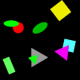
(1)
The lower square is gray.
The right ellipse is green.
The darker square is cyan.
The upper ellipse is green.
The darker ellipse is blue.
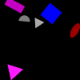
(2)
The lighter triangle is magenta.
The lower triangle is green.
The darker magenta shape is a triangle.
The darker magenta shape is a triangle.
The gray shape closer to the red ellipse is a triangle.
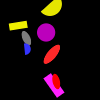
(3)
The smaller red shape is an ellipse.
The lower rectangle is magenta.
The bigger red shape is an ellipse.
The upper red shape is a rectangle.
The smaller red shape is an ellipse.
(4)
The lighter circle is gray.
The ellipse farther from the square is gray.
The left ellipse is blue.
The bigger ellipse is green.
The bigger ellipse is cyan.
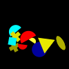
(5)
The lighter cross is yellow.
The left red shape is a semicircle.
The cyan shape closer to the blue circle is a square.
The bigger red shape is an ellipse.
The lower red shape is a square.
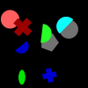
(6)
The cross farther from the cyan shape is blue.
The right red shape is a cross.
The bigger cross is red.
The left green shape is an ellipse.
The lighter green shape is a semicircle.
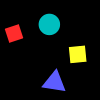
(7)
The square farther from the cyan shape is yellow.
The lower square is red.
The square farther from the blue triangle is red.
The left square is yellow.
The left square is cyan.
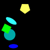
(8)
The lighter cyan shape is a circle.
The smaller ellipse is blue.
The ellipse closer to the yellow shape is cyan.
The lower ellipse is blue.
The cyan shape closer to the yellow pentagon is an ellipse.
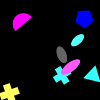
(9)
The left magenta shape is an ellipse.
The magenta shape farther from the cyan cross is a cross.
The cross closer to the magenta semicircle is magenta.
The cross closer to the magenta semicircle is red.
The magenta shape closer to the triangle is a cross.
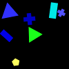
(10)
The triangle closer to the yellow shape is green.
The right rectangle is red.
The lower cross is cyan.
The lighter cross is blue.
The cross closer to the yellow shape is blue.

(11)
The gray shape farther from the magenta shape is a rectangle.
The left ellipse is gray.
The smaller ellipse is red.
The right gray shape is a semicircle.
The darker gray shape is a rectangle.
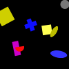
(12)
The darker square is yellow.
The darker square is yellow.
The right blue shape is a circle.
The lower blue shape is a cross.
The square farther from the yellow ellipse is red.
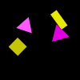
(13)
The left triangle is magenta.
The lower triangle is cyan.
The right magenta shape is a rectangle.
The upper triangle is gray.
The lower yellow shape is a square.
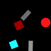
(14)
The rectangle farther from the cyan square is gray.
The rectangle farther from the red circle is gray.
The darker red shape is a triangle.
The upper gray shape is a rectangle.
The left red shape is a square.
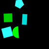
(15)
The left green shape is a square.
The left green shape is a square.
The square closer to the cyan rectangle is green.
The left green shape is a square.
The right green shape is a square.
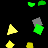
(16)
The semicircle closer to the yellow triangle is green.
The left semicircle is blue.
The right semicircle is gray.
The lighter semicircle is green.
The semicircle closer to the yellow triangle is green.

(17)
The smaller gray shape is a pentagon.
The bigger gray shape is a pentagon.
The bigger gray shape is a circle.
The left gray shape is a pentagon.
The gray shape farther from the blue shape is a cross.
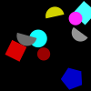
(18)
The bigger gray shape is a semicircle.
The right red shape is a circle.
The upper square is cyan.
The bigger gray shape is a semicircle.
The upper square is cyan.
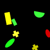
(19)
The darker cross is yellow.
The smaller rectangle is yellow.
The upper rectangle is red.
The cross closer to the yellow rectangle is yellow.
The darker ellipse is green.
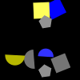
(20)
The lower pentagon is gray.
The left yellow shape is a square.
The lower yellow shape is a pentagon.
The upper pentagon is gray.
The left yellow shape is a semicircle.
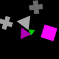
(21)
The left magenta shape is a rectangle.
The upper cross is gray.
The darker cross is gray.
The right magenta shape is a cross.
The left magenta shape is a square.
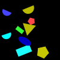
(22)
The pentagon closer to the blue semicircle is gray.
The pentagon closer to the blue semicircle is red.
The right blue shape is an ellipse.
The bigger pentagon is yellow.
The right rectangle is green.
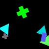
(23)
The smaller cross is gray.
The smaller cross is cyan.
The lower green shape is a cross.
The left cyan shape is a rectangle.
The cross closer to the green triangle is green.
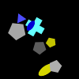
(24)
The yellow shape closer to the cross is a circle.
The lower ellipse is blue.
The upper ellipse is blue.
The upper blue shape is a triangle.
The lower ellipse is yellow.

(25)
The lighter magenta shape is a triangle.
The lower red shape is a cross.
The smaller magenta shape is a square.
The right magenta shape is a triangle.
The lower red shape is a cross.
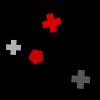
(26)
The left gray shape is a pentagon.
The left gray shape is a cross.
The upper red shape is a pentagon.
The right gray shape is a cross.
The right red shape is a cross.
(27)
The lighter yellow shape is a semicircle.
The right semicircle is yellow.
The bigger semicircle is magenta.
The right semicircle is magenta.
The right circle is magenta.
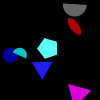
(28)
The blue shape farther from the gray semicircle is a circle.
The lower blue shape is a triangle.
The upper semicircle is gray.
The triangle closer to the red shape is magenta.
The bigger semicircle is cyan.
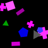
(29)
The blue shape closer to the square is a pentagon.
The bigger blue shape is a pentagon.
The darker pentagon is blue.
The bigger pentagon is green.
The left rectangle is magenta.
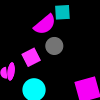
(30)
The circle farther from the magenta ellipse is gray.
The darker cyan shape is a circle.
The lower semicircle is gray.
The upper cyan shape is a square.
The upper circle is cyan.
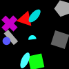
(31)
The lower square is green.
The upper square is magenta.
The lower square is gray.
The right ellipse is cyan.
The right ellipse is cyan.
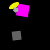
(32)
The square farther from the yellow shape is gray.
The lighter gray shape is a square.
The bigger square is magenta.
The left square is magenta.
The lighter gray shape is a pentagon.
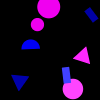
(33)
The rectangle closer to the blue triangle is magenta.
The left rectangle is blue.
The left triangle is magenta.
The left rectangle is blue.
The rectangle farther from the blue triangle is blue.
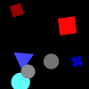
(34)
The smaller red shape is a square.
The darker red shape is a cross.
The lower red shape is a square.
The upper red shape is a square.
The right gray shape is a circle.
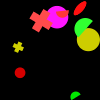
(35)
The green shape farther from the magenta shape is a semicircle.
The smaller cross is yellow.
The lower green shape is a cross.
The left cross is red.
The upper cross is yellow.
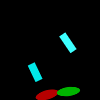
(36)
The darker rectangle is cyan.
The rectangle farther from the red ellipse is cyan.
The darker rectangle is cyan.
The lower cyan shape is a rectangle.
The right rectangle is cyan.
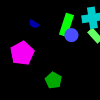
(37)
The lower pentagon is blue.
The left blue shape is an ellipse.
The lighter blue shape is a circle.
The lighter rectangle is green.
The right rectangle is green.
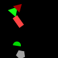
(38)
The upper green shape is a triangle.
The lighter green shape is a pentagon.
The darker green shape is an ellipse.
The triangle closer to the green semicircle is red.
The red shape closer to the semicircle is a triangle.
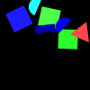
(39)
The lower green shape is a triangle.
The semicircle closer to the red triangle is blue.
The lower semicircle is cyan.
The lower green shape is a square.
The lower semicircle is blue.
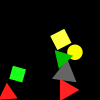
(40)
The bigger red shape is a semicircle.
The lower square is green.
The right red shape is a triangle.
The upper yellow shape is a circle.
The upper square is gray.

(41)
The smaller pentagon is cyan.
The pentagon farther from the green cross is green.
The bigger pentagon is yellow.
The right green shape is an ellipse.
The upper cross is green.
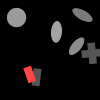
(42)
The darker rectangle is red.
The right rectangle is gray.
The rectangle closer to the gray cross is gray.
The rectangle closer to the gray circle is red.
The left rectangle is red.
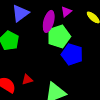
(43)
The darker blue shape is a semicircle.
The bigger ellipse is green.
The right blue shape is a pentagon.
The blue shape farther from the yellow shape is an ellipse.
The right ellipse is cyan.
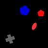
(44)
The left pentagon is blue.
The upper red shape is a semicircle.
The right pentagon is cyan.
The red shape closer to the gray shape is a pentagon.
The smaller pentagon is blue.
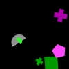
(45)
The magenta shape closer to the gray semicircle is a pentagon.
The lower cross is gray.
The smaller semicircle is gray.
The magenta shape farther from the square is a cross.
The upper magenta shape is a cross.
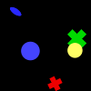
(46)
The bigger circle is yellow.
The blue shape closer to the red cross is a circle.
The upper cross is green.
The bigger cross is green.
The left blue shape is an ellipse.
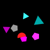
(47)
The smaller cyan shape is a pentagon.
The darker cyan shape is a triangle.
The bigger cyan shape is a semicircle.
The right cyan shape is a cross.
The bigger cyan shape is a triangle.
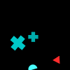
(48)
The left cross is cyan.
The smaller cross is green.
The right cross is cyan.
The upper cross is green.
The cross closer to the triangle is red.
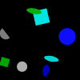
(49)
The circle closer to the green square is gray.
The left blue shape is an ellipse.
The darker blue shape is a circle.
The right circle is gray.
The lighter blue shape is a circle.
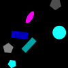
(50)
The gray shape farther from the cyan rectangle is a pentagon.
The bigger rectangle is blue.
The darker gray shape is a pentagon.
The bigger rectangle is cyan.
The lighter gray shape is an ellipse.
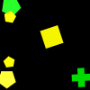
(51)
The darker green shape is a cross.
The upper green shape is a pentagon.
The darker green shape is a cross.
The left green shape is a pentagon.
The darker green shape is a pentagon.
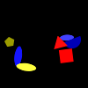
(52)
The right red shape is a square.
The lower red shape is a square.
The right red shape is a square.
The lighter yellow shape is an ellipse.
The upper red shape is a triangle.
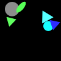
(53)
The smaller circle is green.
The cyan shape farther from the gray shape is a circle.
The bigger circle is gray.
The cyan shape closer to the ellipse is an ellipse.
The smaller circle is gray.
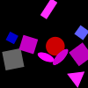
(54)
The lighter ellipse is gray.
The darker ellipse is magenta.
The blue shape farther from the red shape is a square.
The darker blue shape is a square.
The left blue shape is a square.
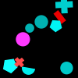
(55)
The cross farther from the rectangle is blue.
The lighter red shape is a cross.
The red shape farther from the magenta shape is a cross.
The bigger cross is red.
The lighter red shape is a rectangle.
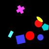
(56)
The left red shape is a circle.
The left cyan shape is a circle.
The blue shape farther from the yellow shape is a circle.
The left blue shape is a circle.
The right red shape is a triangle.
(57)
The left cross is red.
The bigger cross is red.
The lower ellipse is yellow.
The left ellipse is magenta.
The smaller cross is blue.
(58)
The cyan shape closer to the green circle is a rectangle.
The lower cyan shape is a pentagon.
The lower cyan shape is a rectangle.
The cyan shape farther from the green circle is a rectangle.
The cyan shape closer to the green shape is a rectangle.

(59)
The lighter yellow shape is a rectangle.
The yellow shape farther from the circle is a rectangle.
The lower yellow shape is a rectangle.
The bigger rectangle is gray.
The lighter gray shape is a square.
(60)
The upper circle is cyan.
The cyan shape farther from the green circle is a square.
The bigger circle is green.
The darker cyan shape is a semicircle.
The lower circle is cyan.

(61)
The left blue shape is a rectangle.
The upper blue shape is a rectangle.
The lower magenta shape is a rectangle.
The lower blue shape is a cross.
The blue shape farther from the yellow shape is a circle.
(62)
The right circle is magenta.
The circle farther from the yellow ellipse is magenta.
The lower circle is cyan.
The left magenta shape is a circle.
The lower magenta shape is a circle.
(63)
The lower circle is yellow.
The upper green shape is a square.
The bigger cross is blue.
The upper cross is yellow.
The upper circle is blue.
(64)
The bigger green shape is an ellipse.
The right green shape is a square.
The left green shape is a cross.
The lower green shape is a square.
The lighter green shape is a cross.
(65)
The lower triangle is yellow.
The left rectangle is magenta.
The right triangle is magenta.
The upper rectangle is yellow.
The lower rectangle is yellow.
(66)
The red shape closer to the green ellipse is a pentagon.
The left red shape is a pentagon.
The left red shape is an ellipse.
The red shape closer to the green ellipse is a pentagon.
The darker red shape is a pentagon.
(67)
The darker red shape is a circle.
The right red shape is a triangle.
The lower square is blue.
The upper square is blue.
The square closer to the yellow rectangle is magenta.
(68)
The right pentagon is magenta.
The lower red shape is an ellipse.
The lower pentagon is red.
The upper pentagon is red.
The upper red shape is a circle.
(69)
The bigger yellow shape is a square.
The lighter yellow shape is a semicircle.
The right yellow shape is a square.
The upper yellow shape is a square.
The left yellow shape is an ellipse.
(70)
The upper gray shape is a semicircle.
The left gray shape is a semicircle.
The lighter gray shape is a semicircle.
The lighter gray shape is a semicircle.
The right gray shape is a semicircle.
(71)
The upper gray shape is a semicircle.
The lighter gray shape is a pentagon.
The ellipse closer to the green pentagon is red.
The lighter gray shape is a semicircle.
The right green shape is a pentagon.
(72)
The red shape closer to the magenta shape is a semicircle.
The lighter red shape is a semicircle.
The red shape closer to the magenta triangle is a pentagon.
The left red shape is a pentagon.
The lighter red shape is a square.

(73)
The lower rectangle is magenta.
The right gray shape is a square.
The rectangle closer to the cyan shape is magenta.
The right gray shape is a circle.
The right gray shape is a square.
(74)
The right semicircle is blue.
The semicircle farther from the rectangle is blue.
The lower magenta shape is a semicircle.
The right semicircle is blue.
The left semicircle is blue.
(75)
The cross farther from the ellipse is cyan.
The lower cyan shape is a cross.
The right cross is blue.
The cyan shape farther from the blue cross is a cross.
The lower blue shape is a pentagon.
(76)
The left green shape is a cross.
The upper green shape is a square.
The left green shape is a cross.
The pentagon closer to the green square is cyan.
The right green shape is a square.
(77)
The smaller cross is red.
The smaller cross is blue.
The upper semicircle is cyan.
The left semicircle is cyan.
The left semicircle is red.
(78)
The bigger yellow shape is a pentagon.
The darker ellipse is yellow.
The lower ellipse is blue.
The smaller ellipse is gray.
The left yellow shape is a circle.
(79)
The lighter yellow shape is a rectangle.
The yellow shape farther from the triangle is an ellipse.
The right cross is blue.
The lighter yellow shape is an ellipse.
The yellow shape farther from the gray shape is a triangle.
(80)
The darker green shape is a circle.
The yellow shape farther from the magenta shape is a pentagon.
The lower yellow shape is a pentagon.
The upper green shape is a rectangle.
The darker green shape is a semicircle.
(81)
The lower yellow shape is a square.
The yellow shape farther from the triangle is a square.
The circle closer to the yellow cross is green.
The red shape closer to the triangle is a square.
The yellow shape farther from the red square is a circle.
(82)
The left cyan shape is an ellipse.
The upper semicircle is yellow.
The upper semicircle is green.
The left semicircle is green.
The semicircle closer to the cyan ellipse is yellow.
(83)
The right green shape is a pentagon.
The blue shape farther from the gray triangle is a pentagon.
The pentagon closer to the gray triangle is blue.
The right blue shape is a circle.
The upper pentagon is blue.
(84)
The bigger magenta shape is a rectangle.
The lower square is cyan.
The smaller square is magenta.
The right magenta shape is a rectangle.
The smaller square is cyan.
(85)
The darker triangle is cyan.
The bigger triangle is blue.
The left square is blue.
The lower triangle is blue.
The square closer to the magenta shape is blue.
(86)
The darker triangle is gray.
The lower blue shape is a square.
The lower triangle is cyan.
The bigger square is red.
The upper square is gray.
(87)
The lighter green shape is a triangle.
The lower pentagon is gray.
The lighter ellipse is green.
The green shape farther from the square is an ellipse.
The darker green shape is a square.
(88)
The square closer to the cross is red.
The square closer to the green cross is magenta.
The smaller yellow shape is a pentagon.
The upper yellow shape is a pentagon.
The lighter green shape is a cross.
(89)
The smaller magenta shape is a square.
The darker magenta shape is a triangle.
The right magenta shape is a circle.
The right triangle is magenta.
The upper triangle is yellow.
(90)
The lower gray shape is a semicircle.
The right gray shape is a cross.
The upper gray shape is a semicircle.
The darker gray shape is a triangle.
The lower gray shape is a rectangle.
(91)
The lighter red shape is a triangle.
The darker red shape is a circle.
The lighter red shape is a circle.
The upper triangle is cyan.
The left triangle is red.
(92)
The right blue shape is a triangle.
The left blue shape is a triangle.
The bigger blue shape is a circle.
The upper blue shape is a triangle.
The bigger blue shape is a circle.
(93)
The upper rectangle is magenta.
The lower rectangle is gray.
The upper gray shape is a triangle.
The lower rectangle is gray.
The upper gray shape is a rectangle.
(94)
The bigger cross is magenta.
The right cyan shape is a semicircle.
The triangle closer to the magenta shape is gray.
The bigger triangle is cyan.
The darker cyan shape is a semicircle.
(95)
The right ellipse is blue.
The upper blue shape is a triangle.
The darker ellipse is magenta.
The right blue shape is a cross.
The ellipse farther from the blue cross is magenta.
(96)
The lower cross is gray.
The right cross is blue.
The upper cross is yellow.
The cross closer to the pentagon is blue.
The bigger cross is magenta.
(97)
The gray shape closer to the semicircle is an ellipse.
The smaller square is yellow.
The yellow shape closer to the gray square is an ellipse.
The smaller triangle is magenta.
The smaller square is cyan.
(98)
The green shape farther from the ellipse is a square.
The left green shape is a square.
The green shape farther from the ellipse is an ellipse.
The right green shape is a square.
The right green shape is a square.
(99)
The blue shape closer to the square is a pentagon.
The lower blue shape is a pentagon.
The lower blue shape is a cross.
The upper blue shape is a cross.
The ellipse closer to the red cross is red.
(100)
The upper magenta shape is a cross.
The left red shape is a pentagon.
The magenta shape closer to the blue shape is a semicircle.
The lighter red shape is a cross.
The red shape farther from the yellow cross is a semicircle.